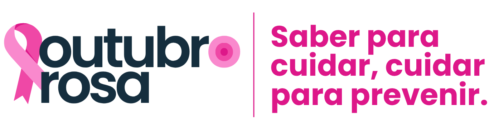

ROSA
';"
>
Uma campanha mundial de conscientização sobre o câncer de mama. Nosso foco é desmistificar a doença e reforçar que a informação é a principal ferramenta para a vida.
Uma campanha mundial de conscientização sobre o câncer de mama. Nosso foco é desmistificar a doença e reforçar que a informação é a principal ferramenta para a vida.
Entenda os conceitos básicos e a estatística mais importante desta causa.
O câncer de mama é o crescimento desordenado de células da mama, que se multiplicam e formam tumores. É o tipo mais comum em mulheres no mundo, depois do câncer de pele.
A boa notícia é que, com a detecção precoce, as chances de cura são muito altas!
Chance de cura com diagnóstico precoce:
Conhecer os fatores de risco é importante, mas mais ainda é ter um estilo de vida saudável.
Lembre-se: ter um fator de risco não é uma sentença, mas um chamado para ter mais atenção e cuidado.
Ação e o conhecimento são seus maiores aliados nesta jornada de cuidado. Clique em cada pilar para saber mais.
Estilo de vida protetor
Autoconhecimento e exames
A detecção de qualquer um desses sinais requer uma consulta médica imediata, sem pânico, apenas com atenção.

Participe dos eventos especiais:
üóìÔ∏è 20/10 √†s 14h
Exames normais garantem, de fato, que você está saudável? E antes dos 40, quando a mamografia ainda não é indicada, será que a mulher está totalmente segura? Essas perguntas nos convidam a repensar o que realmente significa prevenção do câncer de mama. Mais do que exames, trata-se de uma nova maneira de olhar para o cuidado: hábitos, autocuidado e escolhas que podem fazer a diferença no dia a dia.
Um evento Wellhub
üóìÔ∏è 24/10 √†s 17:30
Um momento de descontra√ß√£o s√≥ entre garotas! Vista sua brusinha rosa, pegue seu caf√©, coquinha gelada o chá e participe desse momento! Ah, e vai ter sorteio, viu? üíó
üóìÔ∏è 27/10 √†s 11h
Com uma fala acolhedora e prática, Natalia Lima conecta a prevenção do câncer ao cuidado emocional e ao autocuidado no dia a dia. A palestra traz reflexões sobre nutrição, sono, manejo do estresse e a importância da rede de apoio, finalizando com uma prática leve e interativa.
Um evento Wellhub
Esta jornada do Outubro Rosa é para todos! O cuidado começa com a informação e com a consciência de que a prevenção é um processo contínuo e fundamental.
É importante que as mulheres priorizem o autocuidado e agendem seus exames.
E para os homens: o apoio, o incentivo e o lembrete carinhoso são ações poderosas.
O conhecimento é para todos nós!